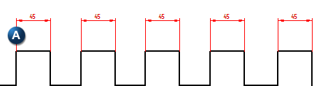
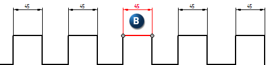
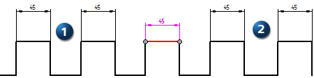
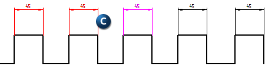
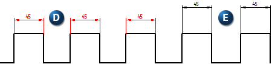

Split Alignment Set command
You can use the Split Alignment Set command to divide a single alignment set (A) into two independent alignment sets. The selected dimension (B) marks the point of division. To use the command, right-click a dimension that is part of an alignment set and select Split Alignment Set


Clicking the dimension after selecting Split Alignment Set from the shortcut menu results in that dimension being alone with an alignment set on each side (1, 2).

In the illustration below, the selected dimension is between the other dimensions in the alignment set. Moving the cursor over the other dimensions displays which dimensions will be included in the newly created alignment set (C).

Once the alignment set is divided, the two alignment sets (D and E) are independent from each other.

This command is not enabled for dimensions that are not part of an alignment set.